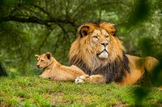

Nature
- Nature provides us with beautiful landscapes, fresh air, and a peaceful environment.
- It includes forests, mountains, rivers, and animals.
- Protecting nature is essential for future generations.
- We must preserve it through sustainable practices.
Technology
- Technology is evolving rapidly and changing the way we live and work.
- From smartphones to AI, it impacts every part of our lives
- From smartphones to AI, it impacts every part of our lives.
- While it offers convenience, it’s important to use it responsibly.
- Innovations in tech continue to shape our future.
Space
- Space exploration has unlocked many mysteries of the universe.
- It helps us understand planets, stars, and galaxies.
- It helps us understand planets, stars, and galaxies.
- Satellites also provide essential communication and navigation services.
- Space science inspires young minds to dream big.
Wildlife
- Wildlife plays a key role in balancing ecosystems.
- Animals, birds, and insects contribute to biodiversity.
- Many species are endangered due to deforestation and poaching.
- Conservation efforts are necessary to protect our planet’s natural heritage.